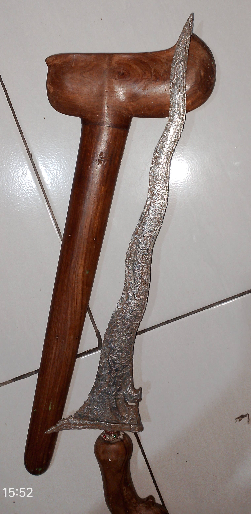
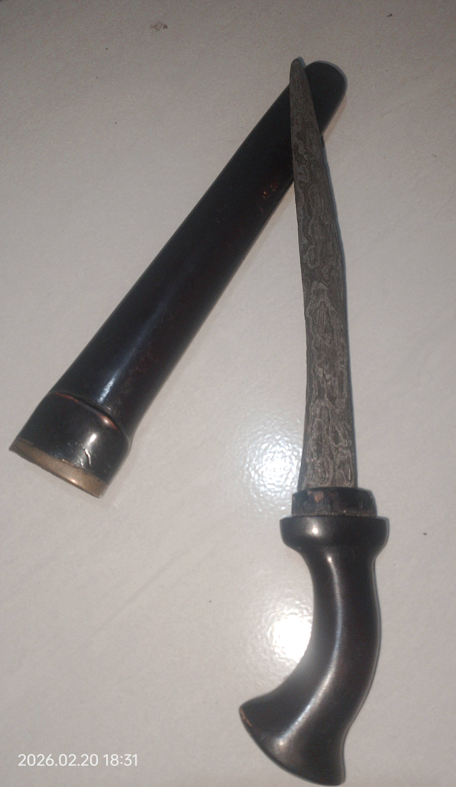

Komunitas Keris SKH
Sejiwa Keris Harum
Keris adalah pusaka luhur Nusantara, warisan adiluhung yang memancarkan filosofi, spiritualitas, dan keindahan seni tempa para Empu.
Arsip Sertifikat Lihat PengurusKeris adalah pusaka luhur Nusantara, warisan adiluhung yang memancarkan filosofi, spiritualitas, dan keindahan seni tempa para Empu.
Arsip Sertifikat Lihat Pengurus
